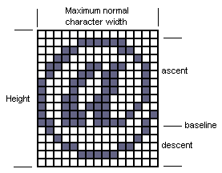
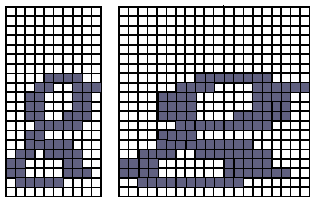

|
| |
This document describes the structure of the font definition file, including the font bitmap, typeface and font store file definitions.
|
|
A font definition file consists of a statement list, which defines bitmaps, typefaces and font store files.
whole-file :
statement-list statement :
font-bitmap-statement| typeface-statement|
font-store-file-statement
The font definition file is characterised by:
one or more font bitmap definitions font-bitmap-statement
one or more typeface definitions typeface-statement
one or more destination font store file definitions font-store-file-statement
Note that in all cases a string
must be enclosed in quotes, e.g. "mystring".
To use an arbitrary Unicode character in a font name string, insert a # (hash) followed by exactly 4 hex digits for the Unicode value of the character at the appropriate point in the string. For example, to replace the second "a" in Arial with an "a-with-acute-accent" change the string to read "Ari#00E1l".
Comments can be included in font definition files by using
the ! character — any text appearing after a !
on a particular line is taken to be a comment.
The font bitmap definitions can be coded in separate
.gdf files and incorporated into the .gd file by
using #include statements, e.g.
“” #include ari16.gdf
where the filename (ari16) is conventionally the
font-bitmap-label from the font
bitmap definition.
BDF files can also be included in the same way, e.g.
“” #include roman11.bdf
Font definition files containing #include
statements need to be processed by the C pre-processor before conversion with
fnttran. For example, to translate tfont.gd you would
type:
cl /P /EP tfont.gd
fnttran tfont.i tfont.gdr
|
font-bitmap-statement :
FontBitmap
font-bitmap-label
Uid
uid
[ Bold ] [ Italic
] [ Proportional ]
MaxNormalCharWidth
char-width
CellHeight
cell-height
Ascent
ascent
code-section-clause
EndFontBitmap
A font bitmap is characterised by:
a font bitmap label font-bitmap-label:
this label will be used in typeface-statements
to refer to the font bitmap.
a UID uid, which can be used in
a typeface-statement to refer to a font
that will be accessible to the FBSERV at run-time, but is inaccessible to the
compiler at compile time. C++ developers can also use uid
as a parameter to CFbsDevice::GetFontById(),
CWsScreenDevice::GetFontById(),
CFontStore::GetFontById(), or
CFbsTypefaceStore::GetFontById() functions. NB. The UID must be
specified in decimal, rather than in (OPL-style) &xxx
syntax.
whether it is bold (Bold) and/or
italic (Italic) and/or proportional (Proportional).
the maximum normal character width, in pixels, char-width.
This is usually defined by the pixel width of the @ character.
the character cell height, in pixels, cell-height.
the character cell ascent, in pixels, ascent.
The diagram below shows the @ character (font: Arial). It has a width of 16 pixels (maximum), height 16 pixels and ascent 11 pixels.

code-section-clause :
CodeSection
code-point-start:code-point-end
char-clause-list
EndCodeSection
A code section defines the bitmaps for
characters in the range code-point-start
to code-point-end. Each character in this
range is defined by a char-clause.
Successive char-clauses define successive
characters in ascending numerical order through the range. There must be
precisely the required number of char-clauses,
(code-point-end - code-point-start
+ 1).
char-clause :
Char
character-code
[ Adjust
left-adjust
right-adjust ]
char-pixel-line-definition-list
EndChar
Each character is defined by an optional left
adjust and/or right adjust, and
then a series of pixel lines. The number of character lines defined between Char
and EndChar must be equal to zero or cell-height.
A char-pixel-line-definition
consists of a sequence of period and asterisk characters. A period represents a
white pixel, and an asterisk represents a pixel which forms part of the
character itself.
Each pixel line definition in a char-clause
must be the same length.
For example, this is the definition for the g character (Font: Times New Roman, 20 pixel, Bold Italic Proportional):
Char 103 Adjust -1 0 ! 'g'
..........
..........
..........
..........
..........
..........
..........
....****..
...**..***
..**...**.
..**...**.
..**..***.
...*****..
..**......
..*****...
.**.****..
**....**..
**....**..
.*****....
..........
EndChar
The char-pixel-line-definition-list
always starts with the topmost row of pixels in the character cell. The lines
continue downwards for every row of pixels until the definition contains cell-height
rows.
.gdr filesA KFontStoreFileVer9Uid is used to identify the filetype.
These files are conventionally incorporated in font definition files by using
#include.
|
typeface-statement :
Typeface
typeface-label
Name
typeface-name[
Symbol ] [ Proportional]
[ Serif ]
FontBitmaps
font-bitmap-reference-list
EndFontBitmaps
EndTypeface
The Typeface statement defines a
typeface and gives it a label, typeface-label.
The typeface also has a full name typeface-name.
typeface-name :
string
The typeface may be a symbol typeface Symboland/or
proportional Proportional and/or serif
Serif. If Symbolis
not stated then the typeface is normal. If Proportionalis
not stated then the typeface is monospaced. If Serifis
not stated then the typeface is sans-serif.
A typeface contains several font bitmaps, each defined by a reference:
font-bitmap-reference :
uid| font-bitmap-label[
WidthFactor
width]
[ HeightFactor
height]
The uid form refers to the font
bitmap identified by its UID, as specified in the UIDclause
of the font-bitmap-statement. The font
bitmap must be accessible to the font bitmap server when this typeface is used
at run-time. Typically, the uid form is
used to refer to fonts which are guaranteed to be in the ROM, but are not in
this compilation unit, for example, the tiny fonts.
The font-bitmap-label form refers
to a font bitmap that has previously been defined, using a FontBitmapstatement
with that label, in this compilation unit. The font bitmap may be
algorithmically enlarged by n-tupling the width using WidthFactorwidth, and/or n-tupling the height using HeightFactorheight. This avoids the need for too many font
bitmap definitions. The example below shows a normal and WidthFactor 2 character, (font: Times New Roman, 20 pixel, Bold
Italic Proportional):

Note that a font bitmap does not have to be incorporated into a typeface to be accessible to the font and bitmap server.
|
font-store-file-statement :
FontStoreFile
CollectionUid
uidKPixelAspectRatio
aspect-ratio
CopyrightInfo
copyright-info
EndCopyrightInfo
Typefaces
typeface-label-list
EndTypefacesEndFontStoreFile
The FontStoreFile statement defines a
destination font store file. The font store file is identified by its
collection UID uid. NB. The UID must be
specified in decimal, rather than in the OPL-style,
&xxxsyntax.
A font store file contains several typefaces, each defined by a typeface-label.
The typeface-label refers to a previously
defined typeface, in this compilation unit.
Copyright information is specified in the copyright clause — any
number of lines of text, each of which must be surrounded by quotes
("), between the CopyrightInfoand
EndCopyrightInfo keywords.
The aspect-ratio identifier gives
the aspect ratio of the device for which the font is designed
(1000*PixelHeightInTwips/PixelWidthInTwips).
|
Fnttran supports BDF V2.2 but without the support for multiple writing
directions as this is not supported by EPOC. The characters must be listed in
order of Unicode encoding. The name of the font, following FONT,
is the label used to identify the individual font bitmap when the typefaces are
constructed. Some additional keyword should be supplied in
thePROPERTIES section of the BDF file however.
STARTPROPERTIES 3
Uid 999999 // A uid enabling the font bitmap to be requested
MaxNormalCharWidth 12 // The maximum normal width of characters in pixels.
MaxConsecutiveFillChars 0
ENDPROPERTIES
The final keyword (MaxConsecutiveFillChars) is optional and
controls whether breaks are made between code sections when there are missing
characters in the input BDF file.
Seehttp://partners.adobe.com/for further
details of bdf format.
Copyright ©2002 Symbian Ltd. 6.1-00174 |
|